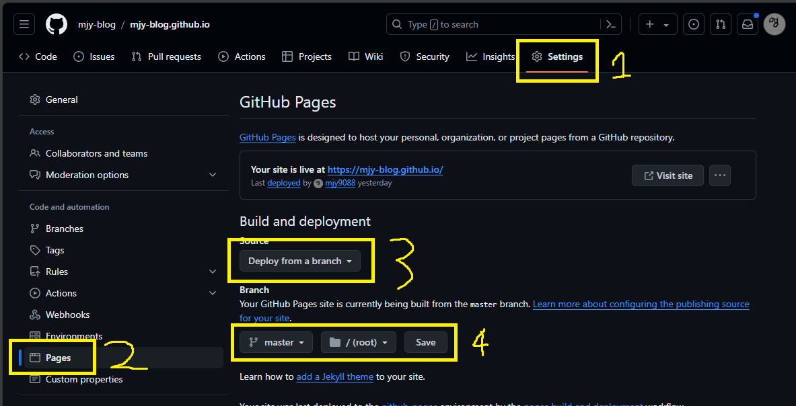

Next.js + GitHub Pages로 블로그 배포 과정 및 후기
2024. 6. 16.|2024. 6. 16.
Next.js와 GitHub Pages로 블로그를 배포하려는 사람들에게 조금이나마 도움이 되고자 과정을 공유하고자 한다.
목차
Next.js 설정
우선 GitHub Pages에 올릴 수 있도록 static하게 배포하려면 output을 "export"로 설정해야 한다.
next.config.js
// @ts-check
/**
* @type {import('next').NextConfig}
*/
const nextConfig = {
output: 'export',
trailingSlash: true,
};
module.exports = nextConfig;
trailingSlash는 개인 취향 차이인 것 같은데, 내가 보기에는 true로 설정하는 게 더 좋아보였다.
개발 전반에 걸쳐 큰 영향을 줄 수 있으므로 신중히 결정하자.
npx next build로 빌드하면 out 폴더가 생긴 것을 확인할 수 있다.
GitHub Pages 설정
내 경우에는 mjy-blog.github.io에 배포할 예정이므로 우선 mjy-blog organization을 만들고, 그 organization에 mjy-blog.github.io이라는 repository를 만들었다.
out 폴더에 .nojekyll 파일을 만들고1 모든 파일을 커밋 & push한다.
cd out
touch .nojekyll
git init
git remote add origin https://github.com/(URL)
git add .
git commit -m "initial commit"
git push origin --force
이후 GitHub에서 다음 설정까지 하면 끝!

Footnotes
-
.nojekyll파일이 없으면_next폴더가 통째로 무시돼버린다. ↩